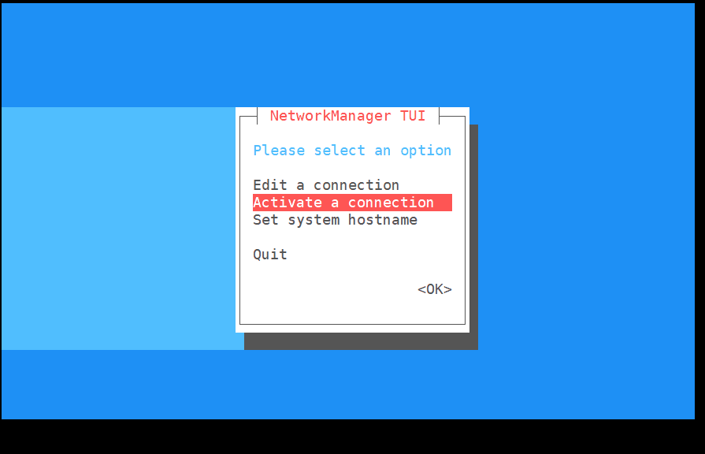
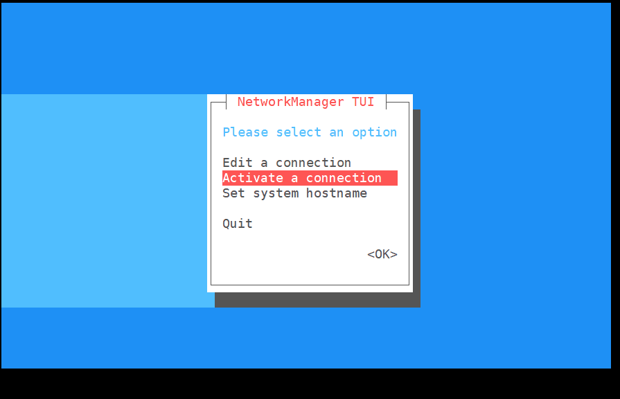

Basic usage
After finishing config system, we have logged in the board and we can use command to control the board.
Expand system capacity
The system not containing MaixPy3 will auto expand the capacity to the maximum at your first start up.
System containing MaixPy3 will not auto expand the capacity, so we need to run this command /usr/lib/armbian/armbian-resize-filesystem start to expand the capacity to the maximum, this will take a while, and don't cancel this when running this command. After finishing this work it will be back to the console for us to control it.
Connect network
Here we use nmtui to connect network.

Click to see graphic steps
Enter nmtui to open NetworkManager TUI
 

We choose Activate a connection
Choose your target wifi
Input the correct password

It will display connecting

The active on the right change into Deactive if succeed connecting wifi
If failed connecting wifi, please retry and input the correct password

Then we back to the command console

Use command ifconfig to get the IP of this board


If we see the IP(marked with red box), we have succeed connecting the network
Add user
Normally we use another user to use linux system instead of root user, because root user can break the system the easily. Here we tell how to create a new user by adduser command.
Add a user named xxx
adduser xxx
After some log shows up, we need to set the password.
New password:
Retype new password:
The following log shows up if we succeed setting password.
passwd: password updated successfully
Then we press Enter for all following settings by default.
Enter the new value, or press ENTER for the default
Full Name []:
Room Number []:
Work Phone []:
Home Phone []:
Other []:
Is the information correct? [Y/n]
Then we succeed creating the user named xxx.
We can use command login to use our new created user:
login xxx
Use command logout to sign out.
logout
Grant administrator privilege
The new created user may need administrator privilege to do finish some work, so here we tell how to grant administrator privilege.
To grant administrator privilege, we just neet to edit a file named sudoers in /etc.
sudo nano /etc/sudoers
Find following content in this file.
# User privilege specification
root ALL=(ALL:ALL) ALL
Add xxx ALL=(ALL:ALL) ALL in that file (xxx is the username to be grant administrator privilege)
# User privilege specification
root ALL=(ALL:ALL) ALL
xxx ALL=(ALL:ALL) ALL
Then save this file and quie editing.
Install application
Here we take install armbian-config as example, just run following command:
sudo apt install armbian-config -y
The above command means to install armbian-config by running the apt application with root privileges and that everything whichi needs to be selected is the yes option
Config Timezone
Just use armbian-config to change timezone. Here we take change to Shanghai time as example.
armbian-config -> Presonal -> Timezone -> Asia -> Shanghai to set Shanghai time as timezone, then use keyboard Tab switch to OK to finish our settings.

Config language
We also use armbian-config to change language.
Just armbian-config -> Personal -> Locales, and select your target language, then choose the default sustem language.
Dont't forget to download your language font to avoid wrong display.
Use Bluetooth
Use armbian-config. armbian-config -> Network -> BTinstall to install bluetooth support package.

Then we can use bluetoothctl to use the bluetooth.
root@maixsense:~# bluetoothctl
Agent registered
[CHG] Controller XX:XX:XX:XX:XX:XX Pairable: yes
[bluetooth]# help
Menu main:
Available commands:
-------------------
advertise Advertise Options Submenu
scan Scan Options Submenu
gatt Generic Attribute Submenu
list List available controllers
show [ctrl] Controller information
select <ctrl> Select default controller
devices List available devices
paired-devices List paired devices
system-alias <name> Set controller alias
reset-alias Reset controller alias
power <on/off> Set controller power
pairable <on/off> Set controller pairable mode
discoverable <on/off> Set controller discoverable mode
discoverable-timeout [value] Set discoverable timeout
agent <on/off/capability> Enable/disable agent with given capability
default-agent Set agent as the default one
advertise <on/off/type> Enable/disable advertising with given type
set-alias <alias> Set device alias
scan <on/off> Scan for devices
info [dev] Device information
pair [dev] Pair with device
cancel-pairing [dev] Cancel pairing with device
trust [dev] Trust device
untrust [dev] Untrust device
block [dev] Block device
unblock [dev] Unblock device
remove <dev> Remove device
connect <dev> Connect device
disconnect [dev] Disconnect device
menu <name> Select submenu
version Display version
quit Quit program
exit Quit program
help Display help about this program
export Print environment variables
Connect to Bluetooth device
Use bluetoothctl to connect to bluetooth device.
scan on
scan off
trust XX:XX:XX:XX
pair XX:XX:XX:XX
connect XX:XX:XX:XX

Set bluetooth audio in/out
To start this, we need install pulseaudio and bluetooth modules
sudo apt install pulseaudio
sudo apt install pulseaudio-module-bluetooth
Then use pactl command to see whether there is device for bluetooth audio output.
pactl list short sinks
Switch audio output to bluetooth, the <dev> in the following command should be 2.
pactl set-default-sink <dev>
The log is as following：
maixsense:~:# apt install pulseaudio
maixsense:~:# apt install pulseaudio-module-bluetooth
maixsense:~:# pactl list short sinks
0 alsa_output.platform-7032000.codec.stereo-fallback module-alsa-card.c s16le 2ch 44100Hz SUSPENDED
2 bluez_sink.00_26_04_00_73_B1.a2dp_sink module-bluez5-device.c s16le 2ch 44100Hz SUSPENDED
maixsense:~:# pactl set-default-sink 2

Then we can play audio to a Bluetooth device or connect the phone via Bluetooth to use as a Bluetooth speaker.
Change volume
Here we use alsamixer to change volume

Use keyboard H to see help.
To change Bluetooth volume, we use pactl.
Besides, we can also use pactl to change the volume of onboard speaker.
## See the input/output device index
pactl list short sources/sinks
## Sets the input/output volume
pactl set-source/sink-volume index volume
pactl set-default-source/sink
## Set the default input/output
For example, set the Bluetooth headset as the output device, the volume is 10%, then increased by 20%, and finally reduced by 30%
maixsense:~:# pactl list short sinks
0 alsa_output.platform-7032000.codec.stereo-fallback module-alsa-card.c s16le 2ch 44100Hz SUSPENDED
2 bluez_sink.00_26_04_00_73_B1.a2dp_sink module-bluez5-device.c s16le 2ch 44100Hz RUNNING
## The bluetooth normally is bluez_sink
maixsense:~:# pactl set-default-sink 2
maixsense:~:# pactl set-sink-volume 2 10%
maixsense:~:# pactl set-sink-volume 2 +8192
maixsense:~:# pactl set-sink-volume 2 -0x3000
##Optional number, Percentage, Decimal, Hexadecimal control, same resule, and can exceed 100%
Media player
Normally we use mplayer for media play.
- Install mplayer
sudo apt install mplayer -y
Then transfer the media file to the board.
The media file can be downloaded from our Download station
We can use mobaxterm connect the board by SSH protocol, then use mobaxterm to transfer the media file to the board.
Drag your media file to the red box in the left of the following picture.
Use command sudo mplayer badapple_240_60fps.mp4 -vo fbdev2 to play video or sudo mplayer Short.mp3 to play audio.
mplayer badapple_240_60fps.mp4 -vo fbdev2
Use onboard Ctrl+C to exit the media playing.
We can also add < /dev/null > /dev/null 2>1 & in the end of the command to play the media background.
mplayer badapple_240_60fps.mp4 -vo fbdev2 < /dev/null > /dev/null 2>1 &
The command above plays media background, if you wang to stop it, you need to use fg command to switch the background application to the front, then use Ctrl+C to stop it.

If it didn't play media correctly, try to increase the media volume by alsamixer application or check the media file path whether matchs the command.
Program C code
Here we use vim as the editor. You can learn many skills about from Internet.
Use command sudo apt install vim -y to install vim.
Then create a file named helloworld.c by vim.
vim helloworld.c
There are 3 modes in vim: Command mode, Insert mode and Last line mode.
The default mode after creating a new file is Command mode, we press the 'i' on the keyboard to enter Insert mode.
Then we input the following codes as the content in the new created file.
#include <stdio.h>
int main()
{
printf("Hello, world\n");
return 0;
}
We use keyboard esc to quit Insert mode to Command mode.
Then use : to Last line mode, use command wq wo save and quit editing.
Then we use gcc to compile our code. If there ie no gcc, install it by apt.
The detailed usage about gcc can be searched from Internet.
gcc hello.c -o hello.o
After finishing compiling our code, run it.
./hello.o

Prepare python code
- See Program C code to get explaination.
vim helloworld.py
i
print("hello world!\n")
esc
:wq
python3 helloworld.py

Light an led by python
Install the python GPIO library first.
pip install gpiod
Then insert the led positive electrode into PH5, and negative electrode into GND.
Cerate led.py file.
vim led.py
Then we input the following codes as the content in the new created file.
import time
import gpiod as gpio
PH_BASE = (8-1)*32 # "PH"
gpiochip1 = gpio.chip("gpiochip1")
led = gpiochip1.get_line((PH_BASE + 5)) # "PH5"
config = gpio.line_request()
config.request_type = gpio.line_request.DIRECTION_OUTPUT
led.request(config)
while led:
led.set_value(0)
time.sleep(1)
print("led on")
led.set_value(1)
time.sleep(1)
print("led off")
Save it and quit editing, run the code in terminal.
python3 led.py
Result:

Running at startup
Scripting language skill is required.
First enable the boot auto-start script, here we can modify the relevant settings by editing the relevant files to.
vim /lib/systemd/system/rc-local.service
Then we add following content in the end of the file.
[Install]
WantedBy=multi-user.target
Alias=rc.local.service
Up to now we have succeed enable auto-start script.
Then we just need to add what we want to run at startup to the rc.local file to achieve startup start.
Edit the auto-start script.
vim /etc/rc.local
Add the operations you want to do at startup before ``exit 0`.
echo "hello world!"
Then restart the board.
For example, after editing the auto-start script, it executs before user logs in, and the execution example log is as follows.
[ OK ] Finished Permit User Sessions.
[ 38.569457] rc.local[1322]: hello world!
It's suggested not to use serial port ar startup, this will make us unable to use the board by serial port.
More usage
Visit MaixPy3(English docs will be updated soon)